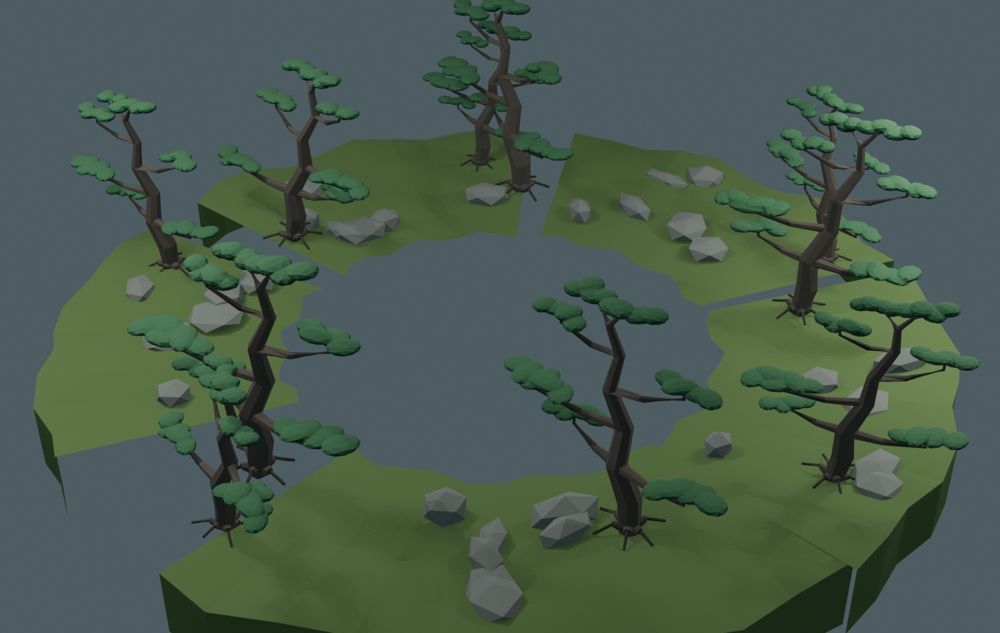

苔庭外部五区 v3
这一版用于隐藏静止的鲲与背部苔庭。外部五区留在球面世界；鲲从中心开口升起。树木不再另造，直接复用了已经导入 Godot 的五个苔庭优化松树模型。

尺度与树源
| 项目 | 原作单位 |
|---|
| 鲲岛原始主体 | 15.04 × 7.72 |
| 外部五区整体 | 18.4 × 16.0 |
| 中央起飞口 | 约 9.0 × 7.0 |
外围略大于鲲岛以提供隐藏余量，但已从 v2 的约 26 宽压缩到 18.4。五区分别复用入口苔径 811、主石之庭 5566、枯瀑之庭 1401、苔海岛群 1997、回望石组 4101 的优化松树。
Godot 资产清单 · 静态世界接入脚本 · 苔庭之战总览